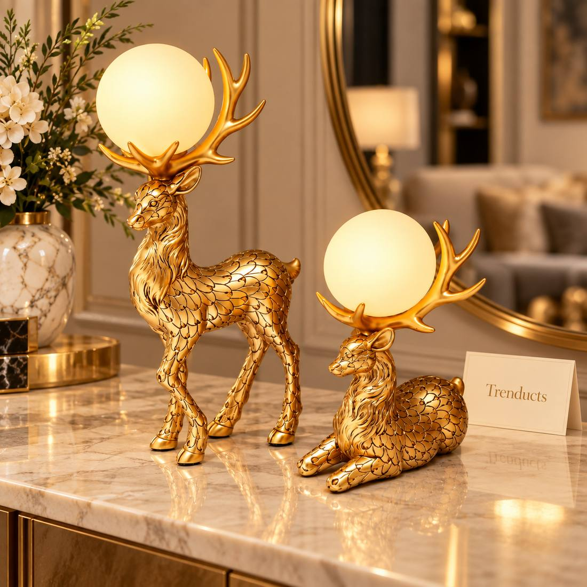
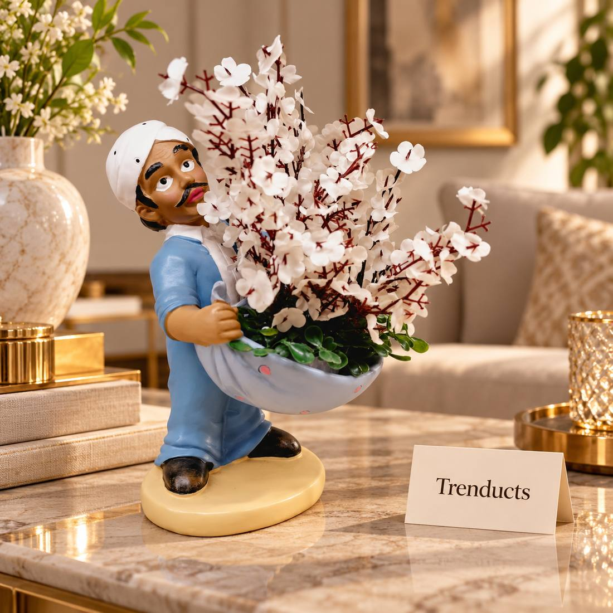

In Lahore, spring arrives suddenly. One week you are still wrapped in a shawl, and the next the sun is warm, the mustard fields outside the city turn yellow, and the gardens of Jilani Park fill with flowers for the annual festival. For generations, this season has been tied to the spirit of Basant, a celebration of colour and the end of winter. Whatever your plans outside, the change of season is a lovely reason to refresh the inside of your home too.
A spring refresh does not mean redecorating. It means putting winter away, letting light in, and adding a few touches of colour and nature that make rooms feel lighter. This guide walks through the steps.
Put winter away properly
Start by clearing out the season that has passed. Wash razais and heavy blankets before storing them, and pack them with a few neem leaves or naphthalene balls in a dry cupboard. Remove thick winter rugs, roll them and store them off the floor. Heaters and geysers that are no longer needed can be cleaned and covered. This alone frees up space and makes rooms feel bigger.
Let in the light
Spring light in Lahore is soft and golden, and it deserves to come in. Wash curtains, or swap heavy winter drapes for light cotton or sheer ones. Clean windows inside and out; dust from winter smog leaves a grey film that dulls everything. Move furniture slightly so seating areas face the windows. You will notice the difference immediately.

Add colour with small pieces
The easiest way to bring Basant colours indoors is through small, changeable items. Yellow, green, orange and pink feel fresh and joyful. Try:
- Cushion covers in mustard or leaf green
- A bright table runner on the dining table
- Fresh flowers from the local nursery or the flower market at Mall Road
- Decorative planters with artificial blossoms for spots that get little light
- A golden or floral table lamp for warm evenings on the veranda
Swap these each season and your home never feels stale.
Decor pieces with a seasonal feel
A single statement piece can tie a room together. Floral figurine planters, a gold flower lamp, or a decorative deer or bird sculpture add personality to a console or shelf. Choose items that work beyond spring so you are not buying something for just one month. Many families in Lahore pick up such accents from an online home decor collection, which makes it easy to compare finishes from home rather than walking through crowded markets.
Bring nature in
Spring is the season for plants. Money plants, snake plants and pothos are easy for beginners and handle indoor conditions well. Place them near windows and water them once the soil feels dry. On balconies and rooftops, seasonal flowers like petunias and marigolds bloom beautifully in February and March. If you live in a flat with little sun, artificial flower arrangements and planters give the same cheerful effect with zero maintenance.

Refresh the entrance
The entrance is the first thing guests see, and spring is a social season with weddings and gatherings. Clean the shoe area, replace a tired door mat, and place a small plant or flower arrangement by the door. A wall hook or key holder keeps things neat. A welcoming entrance makes the whole house feel cared for.
Keep the budget in check
You do not need to spend a lot. Set a budget, perhaps five to ten thousand rupees, and decide on two or three changes rather than ten. Cushion covers and flowers are cheap and high impact. One decor piece or lamp can be the main spend. Everything else is cleaning and rearranging, which costs nothing but effort.
Final thoughts
Spring in Lahore is short and precious, sitting between the cold fog of winter and the long heat of summer. Clear out winter, let in light, add a few pops of Basant colour and some greenery, and your home will feel as fresh as the season outside. It is a small effort that lifts everyone's mood.